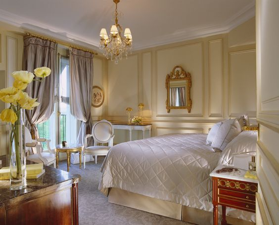

Let's Travel The World!
1. Ritz Paris

2.Four Seasons Hotel George V,Paris
Cet hôtel cinq étoiles est connu pour ses arrangements floraux exquis et est situé au 31 Avenue George V. Des chambres luxueuses, des restaurants étoilés au Michelin et un spa opulent sont autant de caractéristiques du Four Seasons Hotel George V.
Le prix de départ par nuit est d’environ 1 200 €. Nombre de lits : Les chambres standard contiennent un lit king-size ; Cependant, les suites peuvent avoir des canapés-lits ou des lits d’appoint.

3.Hotel le Meurice
L’hôtel Le Meurice est un palace historique avec vue sur le jardin des Tuileries, situé au 228 rue de Rivoli.Il dispose de chambres et d’hébergements élégants, d’un restaurant étoilé au guide Michelin et d’un superbe bar conçu par Philippe Starck.
Lieu : 251 Ruede Rivoli, 75001 Paris, France. Coût : À partir d’environ 800 € par nuit. Nombre de lits par chambre : Les chambres disposent généralement d’un lit king-size et les suites peuvent fournir des lits supplémentaires ou des canapés-lits.

4.Mandarin Oriental,Paris
Situé au 251 rue Saint-Honoré, cet hôtel allie un design contemporain à une touche de luxe oriental. Vous pourrez profiter de chambres et de suites élégantes, d’une cuisine gastronomique, d’un spa et d’un magnifique jardin.
Lieu : 251 Rue Saint-Honoré, 75001 Paris, France. Coût : À partir d’environ 800 € par nuit. Nombre de lits par chambre : Les chambres disposent généralement d’un lit king-size et les suites peuvent fournir des lits supplémentaires ou des canapés-lits.

5.Shangri-la Hotel,Paris
L’hôtel Shangri-La, situé au 10 avenue d’Iéna, est installé dans un palais historique et offre une fusion distinctive de luxe et d’histoire.Il propose une cuisine étoilée au guide Michelin, un hébergement exquis et une vue imprenable sur la Tour Eiffel.
Lieu : 10 Avenue d’Iéna, 75116 Paris, France.Coût : À partir d’environ 900 € par nuit.Nombre de lits par chambre : Les chambres disposent généralement d’un lit king-size et les suites peuvent avoir des lits d’appoint ou des canapés-lits.